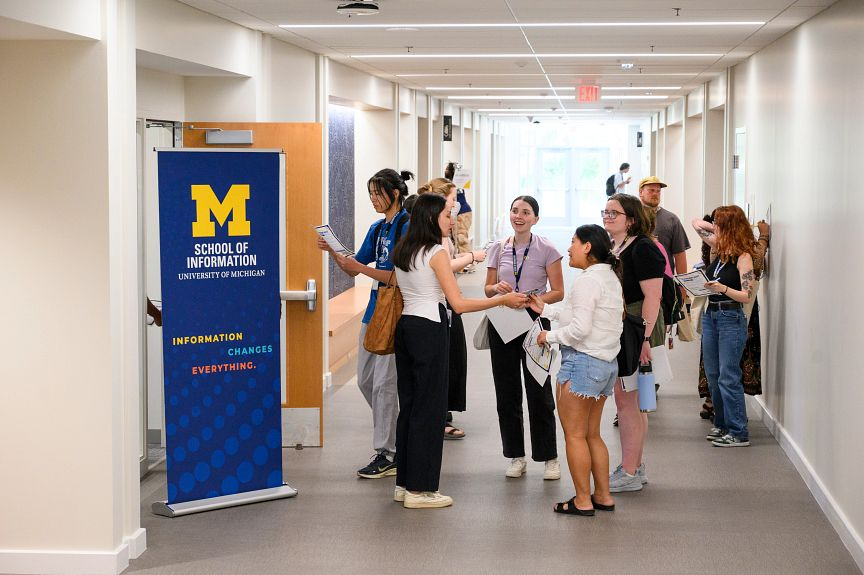

Your Central Hub for Career Success at UMSI
Empowering you to take the next step in your career journey, the CDO provides innovative resources, real-world guidance, and personalized support—whether you’re exploring options or preparing to launch your career. Our mission is to educate, empower, and engage UMSI students through individualized coaching, practical tools, and dynamic career programming, with an unwavering commitment to inclusion, access, and student advocacy.
We partner with employers locally and globally to create impactful, mutually beneficial relationships, and we lead with agility and collaboration to stay at the forefront of career development best practices. Rooted in our values—being student-centered, supportive, innovative, and balanced—we strive to ensure all UMSI students have equitable access to opportunities and the skills for lifelong career success.
Build Your Career Essentials
Connect With Us
Most Popular Resources
Meet the CDO Team

Joanna Kroll
Director of Career Development
Krystle Forbes
Associate Director of Career Development
Jordan Hansen
Assistant Director of Undergraduate Career Education
Laura Marsh
Employer & Alumni Relations Manager
Nick Jones
Employer & Alumni Relations Coordinator

Emily Cutlip
Career Education Coordinator

Carina Wilson
Career Education Coordinator
Helmi Barzak
CDO Administrative & Student Assistant